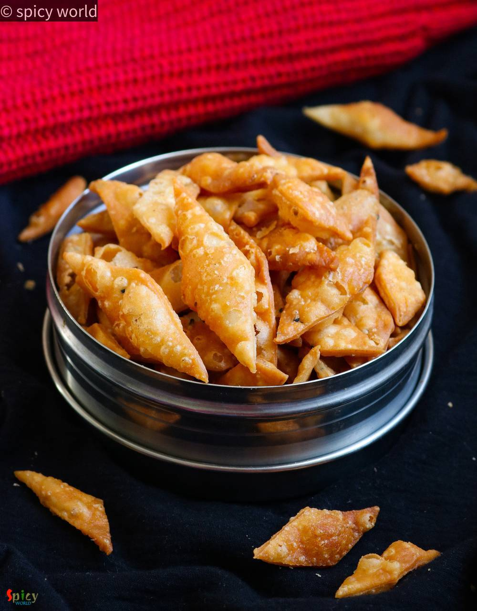
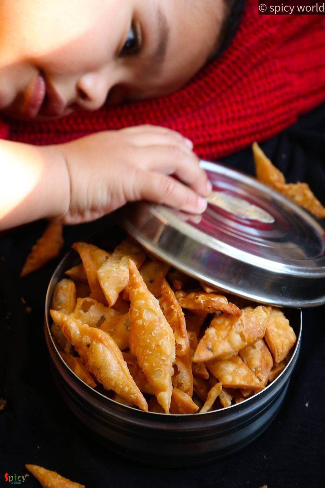

Simple and Easy Recipes
Nimki / Namak pare
© 2016 Spicy World, Published on: Jan 7, 2020
Nimki / Namak pare is a crispy, crunchy, flaky, savory snack. In Bengal, we call them Nimki. In other parts of India, they also known as Namak pare, Nimkin, Namkin, Matrii etc. The recipe calls for very few ingredients, one of them is all purpose flour or maida. To make a batch of crunchy Nimki all you need is proper proportion of ingredients and little patience while frying them. Do give this a try and let me know how it turned out for you.

Ingredients
- 1 cup of all purpose flour.
- 4 Tablespoons of melted ghee or oil.
- Pinch of kalonji or nigella seeds.
- Pinch of ajwain or carom seeds.
- 1 Teaspoon of salt.
- Some warm water.
- A cup of vegetable oil for frying.


Steps
In a mixing bowl, add the flour, salt, ajwain, kalonji and oil.
Mix everything really well for 1-2 minutes with your hand.
Flour will become little crumbly because of the oil.
After mixing leave it for 10 minutes.
Then gradually add little by little warm water and start mixing.
Make a firm dough. Neither too soft, nor too hard. Knead the dough for a minute and cover it for 20 minutes.
Make big 3-4 balls from the dough.
Take one ball, dust some flour and roll it to a thin disc just like roti or paratha.
Make criss cross cuts on the disc with a knife.
Fry 10-15 diamond shaped patterns in medium hot oil. The oil should be hot, neither smoking hot nor cold.
While frying keep the flame on medium always. One batch will take around 7-8 minutes.
When they will become golden in color, take them out from oil and keep on a tissue paper.
When they will cool down completely, keep them in a air tight container. They will be good there for almost a month.
Your nimki is ready to serve.
Serve them with milk tea ..
")